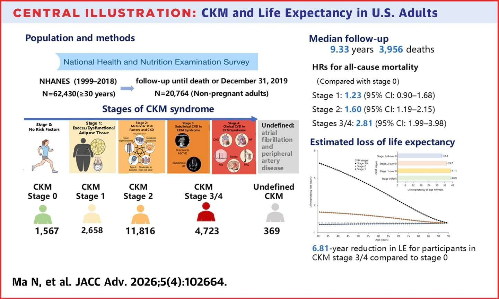
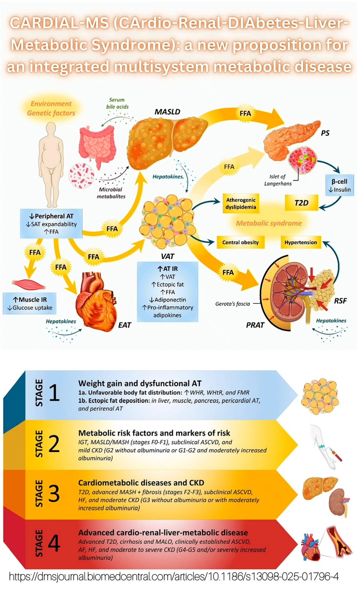

Cardiovascular, kidney, and metabolic health are all intimately linked.
The umbrella term is “CKM disease”. You can argue that they are, in aggregate, the same disease.
#kidneysHD #ckmHD #metabolicsyndromeHD #insulinresistanceHD #cvdHD
Karl Nadolsky shares a large US study of over 20,000 adults on cardiovascular-kidney-metabolic (CKM) syndrome staging. Life expectancy declined with each stage; at age 40, women with advanced CKM lost more than 7 years and men nearly 6 compared with stage 0. Cardiovascular, kidney and metabolic disease are often the same process.
Cardiovascular, kidney, and metabolic health are all intimately linked.
The umbrella term is “CKM disease”. You can argue that they are, in aggregate, the same disease.
#kidneysHD #ckmHD #metabolicsyndromeHD #insulinresistanceHD #cvdHD
Cardiovascular-kidney-metabolic (CKM) syndrome is a framework that helps doctors understand how excess body fat, insulin resistance, diabetes, high blood pressure, heart disease, and kidney disease often develop together and progressively increase health risks over time.
This is essentially a component of staging obesity-related disease severity (Nadolsky K, et al. American Association of Clinical Endocrinology Consensus Statement: Algorithm for the Evaluation and Treatment of Adults with Obesity - 2025 Update. Endocr Pract. 2025;31(11):1351-1394);➡️the higher the stage, the greater the impact on long-term health and life expectancy.
In this large U.S. study of more than 20,000 adults, researchers found that life expectancy declined as CKM stage advanced (not surprisingly). Adults with more severe CKM disease (stages 3–4) lived substantially fewer years on average than those with little or no CKM disease. At age 40, women with advanced CKM disease lost more than 7 years of life expectancy compared with women at stage 0, while men lost nearly 6 years.
Importantly, the study reinforces that cardiometabolic disease is not just about body weight alone. CKM staging focuses on overall “cardiorenalmetabolic” health.
This approach recognizes that obesity exists on a spectrum of disease severity regardless of BMI.
The good news is that obesity-related CKM syndrome is often preventable and treatable.The foundation of treatment is “primordial prevention” (ie preventing risk factors from developing in the first place) through healthy lifestyle habits such as:
- Nutritious dietary patterns (#diet/#nutrition)
- Regular physical activity & #exercise
- Adequate #sleep
- Stress management
- Avoiding tobacco and excessive alcohol
- Maintaining healthy body composition
For those with established disease, the goal is not simply #weightloss alone, but improving long-term cardiometabolic health, quality of life, and longevity.
PMID: 41863209

Louis shares the AHA's cardiovascular-kidney-metabolic syndrome initiative, and argues heart, kidney and metabolic disease are in aggregate one disease.

Louis shares a 2025 proposal that metabolic liver disease, diabetes, cardiovascular and kidney disorders form a single progressive syndrome rooted in dysfunctional adipose tissue and ectopic fat, and argues for early intervention beyond single risk factors.

Louis shares Karl Nadolsky's summary of a study showing 10% weight loss lowered liver fat by about 33% and intramuscular fat by about 13%, and improved insulin sensitivity by about 40%. Exercise alone improved fitness and insulin sensitivity but did not significantly reduce liver or muscle fat.
Louis tells group members with high CAC that the risk is high but manageable: about 30 lb weight loss clears liver and pancreas fat and can reverse soft plaque, LDL below 70 mg/dL often halts or reverses plaque, a Mediterranean diet has the most evidence, and exercise lowers risk at the same CAC.

A shared piece argues that every magnesium salt dissociates in stomach acid and Mg2+ is what is absorbed, so threonate-for-brain or taurate-for-heart claims lack human data. Louis says differences between forms are fairly minor.

Louis describes a vicious cycle in which weight gain and liver fat raise insulin through insulin resistance, which in turn promotes more weight gain and liver fat, often ending in obesity, fatty liver, diabetes and heart disease. He says breaking it requires a diet that removes excess abdominal and liver fat.